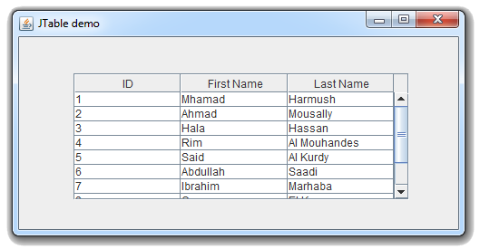
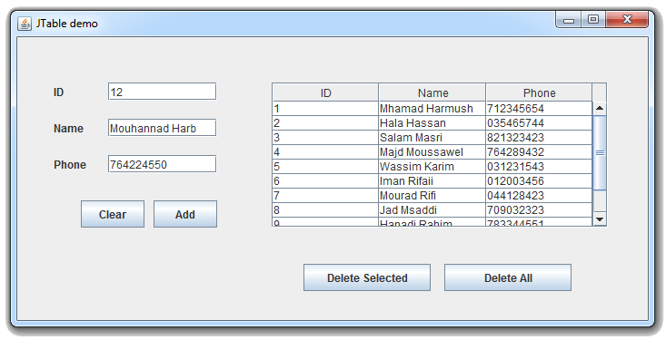
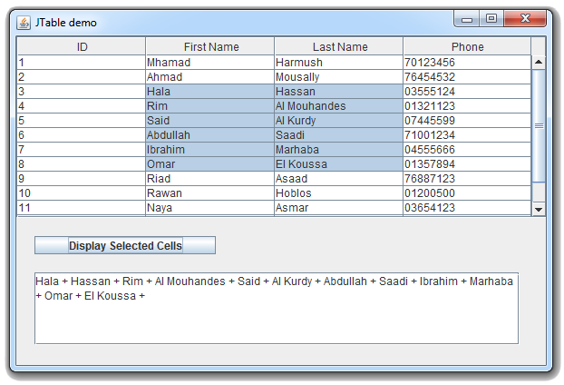
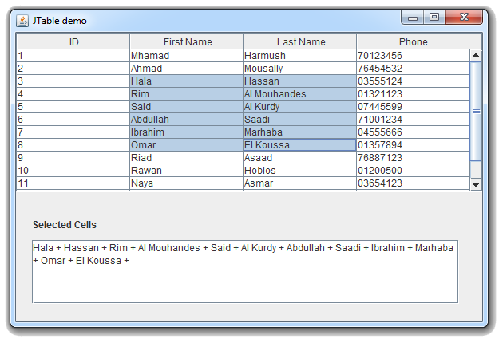
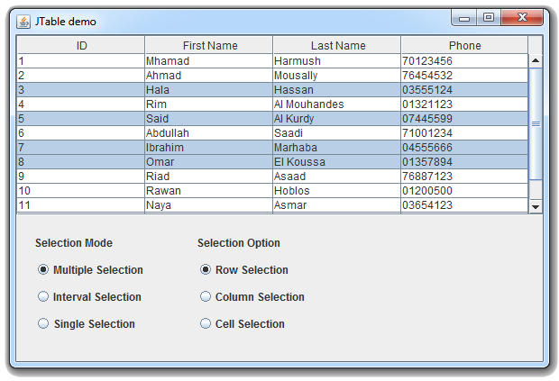

Java Swingالكلاس JTable
مقدمة
الكلاس JTable يستخدم لإضافة جدول (Table) في واجهة المستخدم.
بناؤه
public class JTable
extends JComponent
implements TableModelListener, Scrollable, TableColumnModelListener, ListSelectionListener, CellEditorListener, Accessible, RowSorterListener
طريقة التعامل معه
عند التعامل مع الـ Table فأنت لا تضع فيه القيم مباشرةً. بل تضع القيم في الـ Model الخاصة به.
إذاً سيكون عليك إنشاء كائن من إحدى الكلاسات التي تنفذ الإنترفيس TableModel و وضعه كـ Model لكائن الـ JTable.
بعدها يمكنك إنشاء مصفوفتين, الأولى تكون ذات بعد واحد تضع فيها أسماء أعمدة الجدول. و الثانية تكون ذات بعدين تضع فيها قيم الجدول.
في الأخير تضع كلا المصفوفتين في الـ Model و عندها ستظهر عناصرهما مباشرةً في الجدول.
و يمكنك وضع الـ Table بداخل JScrollPane لجعلها تظهر Scroll Bar عند الحاجة.
لا تقلق ستفهم كل شيء من الأمثلة.
مصطلحات تقنية
| المصطلح |
معناه |
| Table |
تعني جدول. و هو يتألف من أعمدة و أسطر. |
| Row |
عبارة عن سطر في الجدول. |
| Column |
عبارة عن عامود في الجدول. |
| Cell |
عبارة عن خلية في الجدول. و هي عبارة عن كائن موجود في سطر و عمود محدد في الجدول.
كل خلية تمثل قيمة في الجدول. |
كونستركتورات الكلاس JTable
الجدول التالي يحتوي على كونستركتورات الكلاس JTable.
| الكونستركتور مع تعريفه |
public JTable()
ينشئ كائن من الكلاس JTable يمثل جدول فارغ. |
public JTable(int numRows, int numColumns)
ينشئ كائن من الكلاس JTable يمثل جدول له عدد محدد من الأعمدة و الأسطر.
|
public JTable(Object[][] rowData, Object[] columnNames)
ينشئ كائن من الكلاس JTable يمثل جدول مجهز بأسماء الجدوال و البيانات.
|
public JTable(TableModel model)
ينشئ كائن من الكلاس JTable يمثل جدول مجهز بأسماء الجدوال و البيانات.
مكان الباراميتر model نضع كائن من إحدى الكلاسات التي تنفذ الإنترفيس TableModel و الذي بدوره يحتوي على جميع المعلومات التي ستظهر في الجدول. |
public JTable(Vector rowData, Vector columnNames)
ينشئ كائن من الكلاس JTable يمثل جدول مجهز بأسماء الجدوال و البيانات.
|
دوال الكلاس JTable
الجدول التالي يحتوي على بعض دوال الكلاس JTable.
| الدالة مع تعريفها |
public Object getValue(int row, int column)
ترجع قيمة موجودة في كائن الـ JTable الذي قام بإستدعائها ككائن نوعه Object.
|
public void SetValue(Object newValue, int row, int column)
تضع قيمة جديدة مكان قيمة كانت أصلاً موجودة في كائن الـ JTable الذي قام بإستدعائها.
مكان الباراميتر newValue نضع القيمة الجديدة. مكان الباراميتر row نضع Index السطر الذي يحتوي على القيمة. مكان الباراميتر column نضع Index العامود الذي يحتوي على القيمة.
|
public int getRowCount()
ترجع عدد الأسطر الموجودة في كائن الـ JTable الذي قام بإستدعائها. |
public int getColumnCount()
ترجع عدد الأعمدة الموجودة في كائن الـ JTable الذي قام بإستدعائها. |
public int getSelectedColumn()
ترجع رقم يمثل Index أول عامود قام المستخدم بتحديده في كائن الـ JTable الذي قام بإستدعائها.
و ترجع 1- في حال لم يتم تحديد أي عامود. |
public int[] getSelectedColumns()
ترجع مصفوفة من الأرقام تمثل أرقام الـ Indices لجميع الأعمدة التي قام المستخدم بتحديدها في كائن الـ JTable الذي قام بإستدعائها.
و ترجع مصفوفة فارغة, أي 0 في حال لم يتم تحديد أي عامود. |
public int getSelectedRow()
ترجع رقم يمثل Index أول سطر قام المستخدم بتحديده في كائن الـ JTable الذي قام بإستدعائها.
و ترجع 1- في حال لم يتم تحديد أي سطر. |
public int[] getSelectedRows()
ترجع مصفوفة من الأرقام تمثل أرقام الـ Indices لجميع الأسطر التي قام المستخدم بتحديدها في كائن الـ JTable الذي قام بإستدعائها.
و ترجع مصفوفة فارغة, أي 0 في حال لم يتم تحديد أي سطر. |
public boolean isCellSelected(int row, int column)
ترجع true إذا كان رقم السطر و العامود اللذين تم تمريرهما كـ Arguments للدالة يشيران إلى Cell قد تم تحديدها في كائن الـ JTable الذي قام بإستدعائها.
|
public void setModel(TabelModel model)
تستخدم لتحديد Model كائن الـ JTable الذي قام بإستدعائها.
مكان الباراميتر model نضع كائن من إحدى الكلاسات التي تنفذ الإنترفيس TabelModel.
ترمي الإستثناء IllegalArgumentException في حال كان كائن الـ dataModel فارغاً, أي قيمته تساوي null. |
public TabelModel getModel()
ترجع نسخة من كائن الـ TableModel الذي يستخدمه كائن الـ JTable الذي قام بإستدعائها. |
أمثلة شاملة
المثال الأول
المثال التالي يعلمك طريقة إنشاء جدول و إعطائه قيم مباشرةً عند الإنشاء ثم ضافته في النافذة.

شاهد المثال »
المثال الثاني
المثال التالي يعلمك طريقة جعل المستخدم يدخل البيانات في الجدول, بالإضافة إلى جعله قادر على حذف البيانات التي أدخلها.

شاهد المثال »
المثال الثالث
المثال التالي يعلمك طريقة الحصول على جميع القيم التي قام المستخدم بتحديدها في الجدول عند النقر على زر.

شاهد المثال »
المثال الرابع
المثال التالي يعلمك طريقة الحصول على جميع القيم التي قام المستخدم بتحديدها في الجدول.

شاهد المثال »
المثال الخامس
المثال التالي يعلمك الطرق التي يمكن فيها جعل المستخدم يقوم باختيار القيم الموجودة في الجدول.

شاهد المثال »

 محرر الويب
محرر الويب نظام الألوان
نظام الألوان محول الوحدات
محول الوحدات محلل عناوين الشبكات
محلل عناوين الشبكات